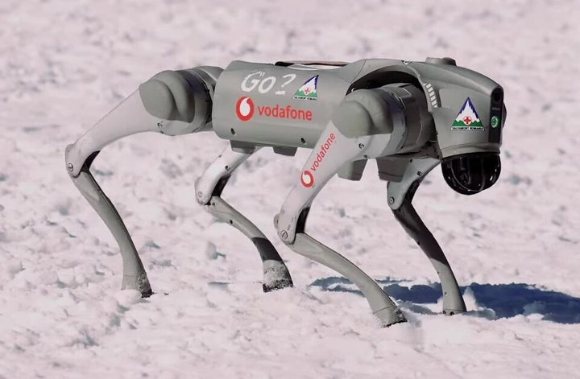
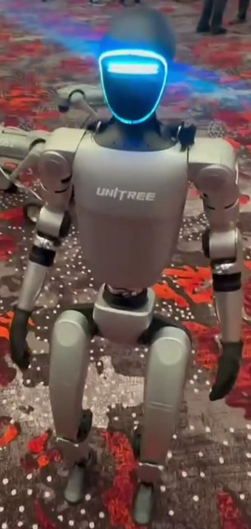

大阪大学 中島優作
1か所で力3＋トルク3を測る
手先：ツールにかかる力を直接測る
ベース：ロボット全体にかかる力を測る
各関節に内蔵、1軸ずつトルクを測る
ヤコビ行列で手先の力を推定
アームのどこが触れても気づける
例：Franka, KUKA LBR iiwa
→ 本スライドでは ① 6軸FTセンサ を扱います（センサなしの方法などは次の章のコラムで →）
τ ≈ N · Kt · i − 摩擦 （Kt：トルク定数、N：減速比）
P. M. Wensing et al., "Proprioceptive Actuator Design in the MIT Cheetah", IEEE T-RO 33(3), 2017 ／ B. Katz et al., "Mini Cheetah", ICRA 2019


写真：Unitree Go2 — HotNews Romania, CC BY 3.0（Wikimedia Commons）／ Unitree G1 — Sayanesy, CC0（Wikimedia Commons）。内部構成は公開情報・分解記事からの推定
| 精度 | コスト | 測れる場所 | 主な使い道 | |
|---|---|---|---|---|
| ① 6軸FTセンサ | ◎ | 高い | 付けた所だけ | 研磨・組立・力制御 |
| ② 関節トルクセンサ | ◎〜○ | 高い | 全関節 | 協働ロボット（Franka, iiwa） |
| 電流（高減速） | △ | 追加なし | 全関節 | 衝突検知 |
| 電流（QDD・DD） | ○ | 安い | 全関節 | 四足・ヒューマノイド |
精密な力が要る作業は FTセンサ、全身で触れて動く・安く作るなら電流ベース
均一な力をかける制御や接触時のデータ収集に使います↓
git clone https://github.com/hiveground-ros-package/leptrino_force_torque
rosdep install -i --from-paths src
catkin build; source devel/setup.bash
これで準備完了
/dev/ttyACM* または /dev/ttyUSB*
/dev/serial/by-idで確認をすると製品ごとの固有のパスも可能
roslaunch leptrino_force_torque leptrino.launchrostopic echo または rqt_plotで確認